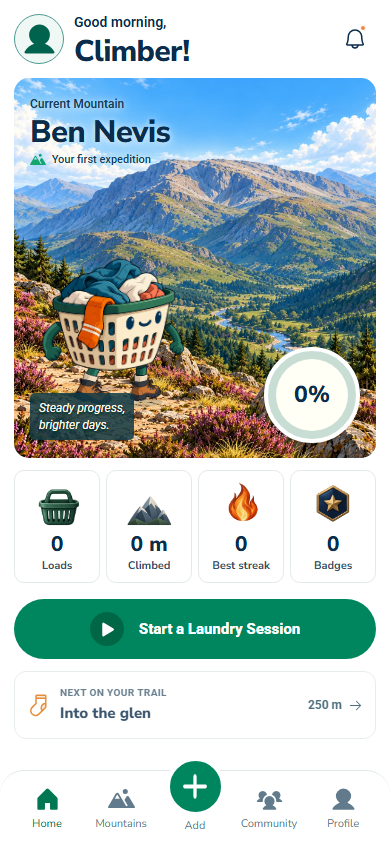
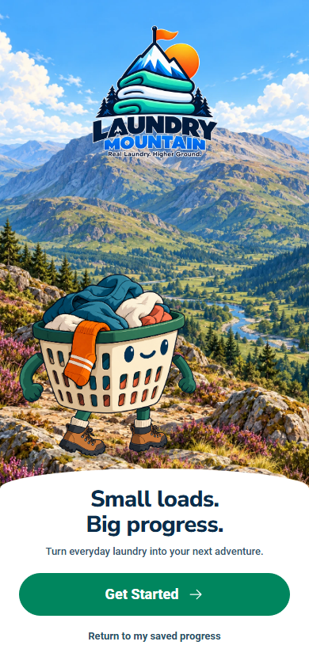
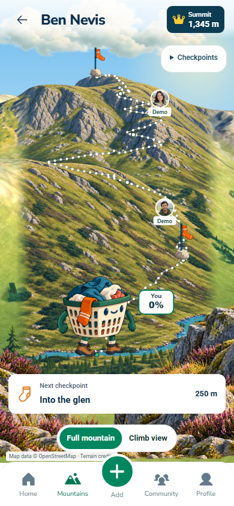
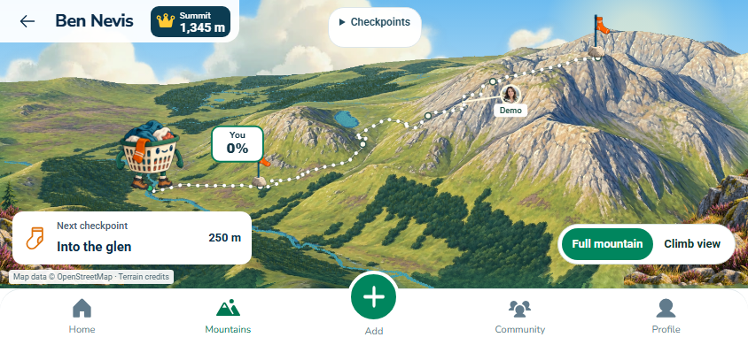
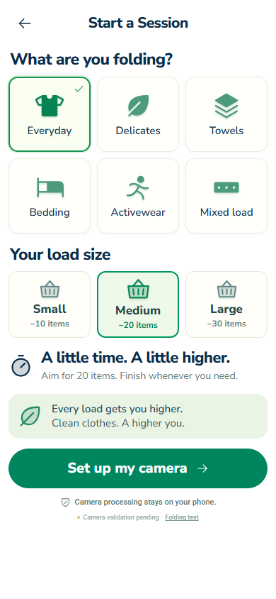
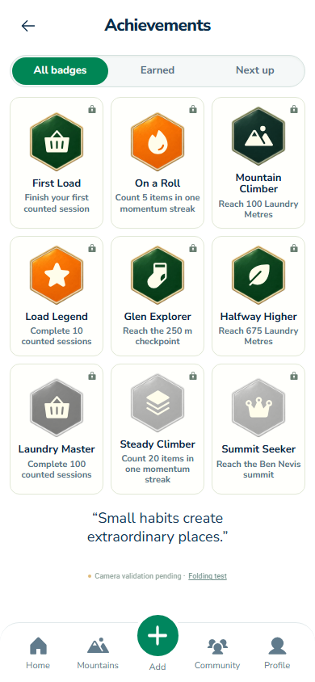
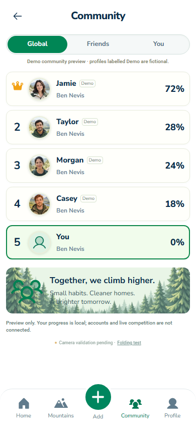
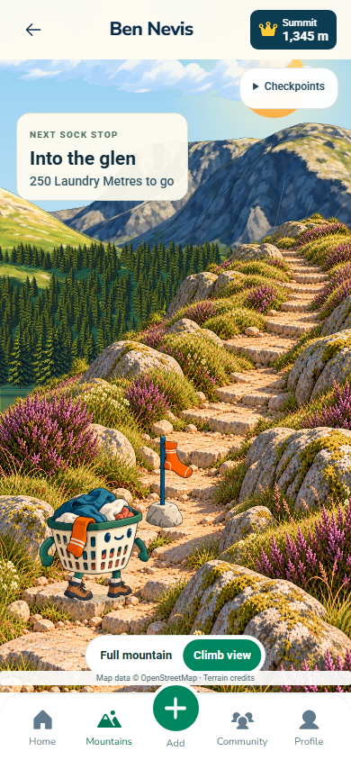

Laundry Mountain · Visual refinement
Actual browser captures from visual-refinement, 8 October 2026. Empty local ledger, no invented progress. The approved concept is shown beside the implementation; this is a review, not a claim of final visual approval.
Full approved concept board

Home
Approved conceptWorking app · 390 × 844
Welcome
Approved conceptWorking app · 390 × 844
Full mountain
The concept is an artistic proposal. The app retains the surveyed terrain proportions and mapped Mountain Path; it does not copy the concept's invented lake or path across water.
Approved conceptWorking app · 390 × 844
Landscape composition · 844 × 390
Working app · full viewport
Supporting screens




Source board 1672 × 941. Reference phone panels are approximately 320 × 758; actual 390 × 844 captures are shown at equal height without stretching. Typography, progress data and terrain geometry intentionally differ where required by the real product. Icons reflect the subsequent request for a less cartoon-like treatment.